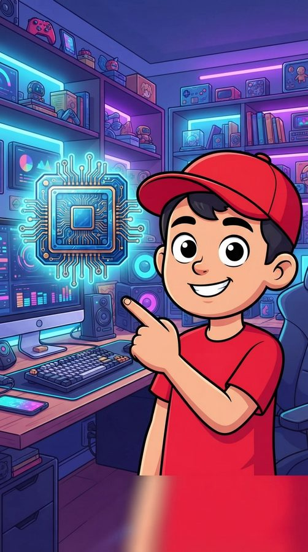
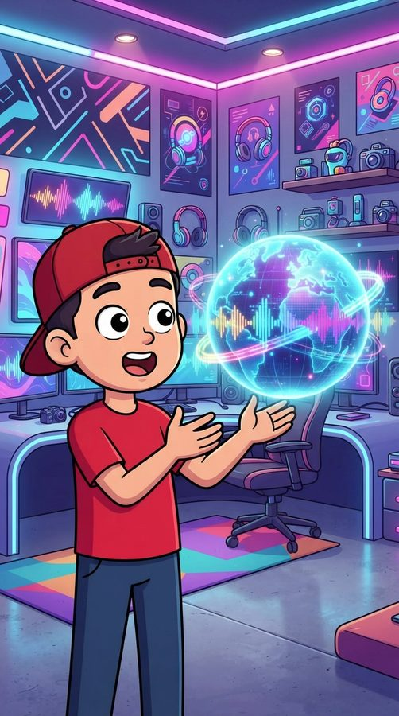
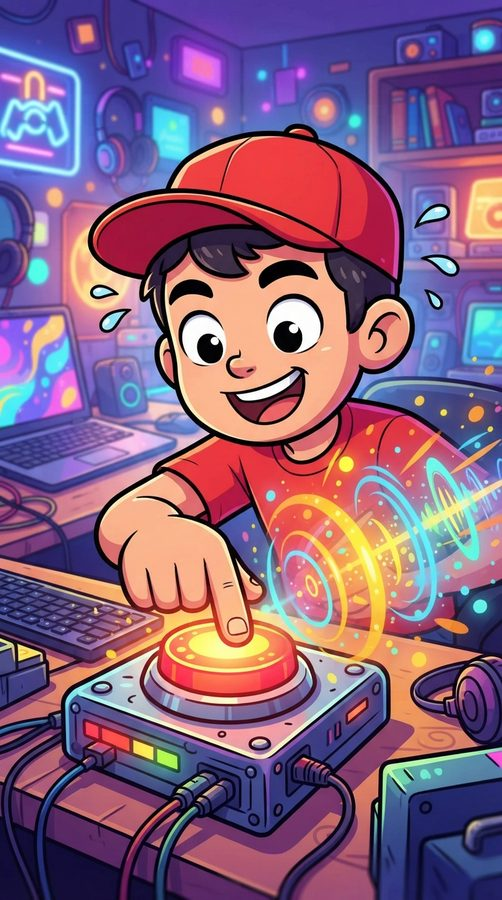

2026 · Python
ShortsForge
One command turns a topic into a finished video.
Type a topic. It writes the script, plans the scenes, writes the image prompts, speaks the narration, and cuts the video with captions ready to post.
The language model and the voice both run on my own computer, so a video costs nothing to make and works with the internet off.
The hard part was not generating things, it was stopping the character from changing appearance between scenes. One file now describes the character, and every prompt repeats it word for word.
script + scene enginecharacter-lock prompt systemlocal voice pipelineauto-captioningtwo orchestration agentswhole model stack runs local



Three frames from one generated Short. Same character, three scenes — that consistency is the part that took the work.